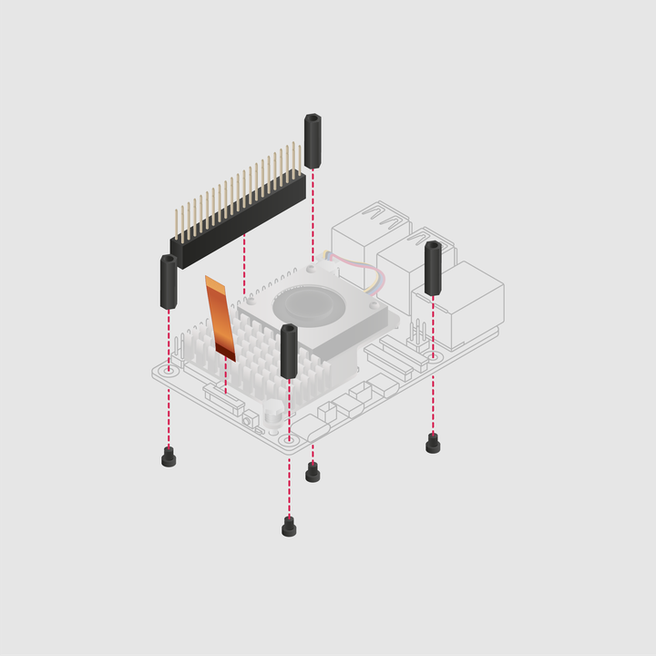

Install the M.2 HAT mounting hardware
- Install the spacers using the provided screws.
- Firmly press the GPIO stacking header on top of the GPIO pins. The orientation doesn't matter, but the pins must all fit into place.
- Lift the ribbon cable holder gently from both sides on the M.2 HAT+ before disconnecting the ribbon cable.
- Lift the ribbon cable holder on the PCIe port of your from both sides, then insert the cable with the metal contact points facing towards the USB ports.
- With the ribbon cable fully and evenly inserted into the PCIe port, push the cable holder down from both sides to secure the ribbon cable firmly in place.
